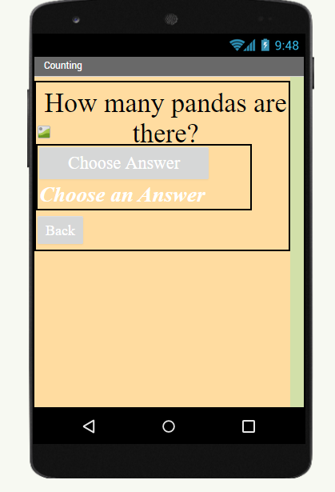
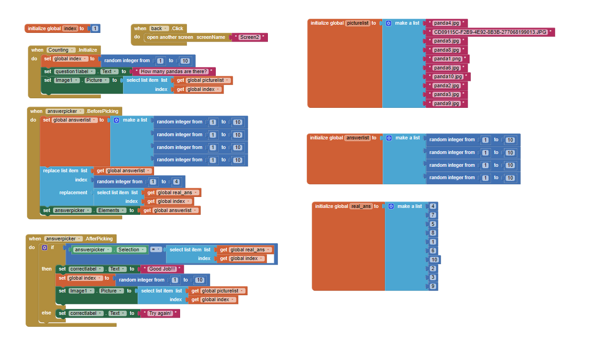

This is my game that I built from Scratch!How to play: Get Avery to the city safe from all the monsters she finds along her way. Use right key to move her to the right, left key to move her to the left, up key to move her up, and down key to move her down. If you touch any monsters you go back to the beginning. To restart just click the green flag. Good luck!!This is my preschool game that I built from MIT App Inventor!


Our app is an app that helps preschoolers learn how to count and learn the alphabet. The above screenshot shows our counting section of the app. Basically the kids are given a picture of various numbers of pandas and they have to click the "answerpicker" in order to pick the correct answer. If they click the right answer the "correctlabel" says good job and the picture changes to another picture of pandas. However, if the kids get it wrong the "correctlabel" says try again and the kids cannot move on until they have the right answer! The same thing happens for the alphabet but instead the kids are given an object and they have to figure what letter the object starts with!This is our interactive fiction (named High School Musical 2.0) that we made through Python!